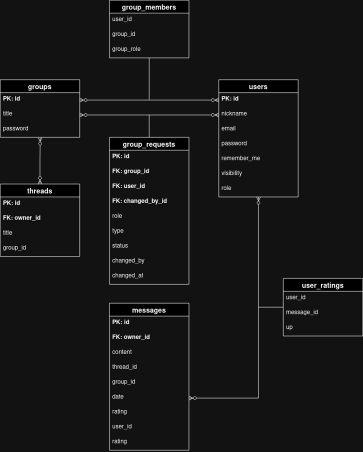

Sociální síť
- Autoři
- Otradovec Martin
xotrad00@stud.fit.vutbr.cz -
Vedoucí týmu, FE, BE
- Hubinský Matúš
xhubin04@stud.fit.vutbr.cz -
FE, BE
- Marek Vandík
xvandi01@stud.fit.vutbr.cz -
FE, BE
- URL aplikace
- https://iisoc.devport.space/
Uživatelé systému pro testování
| Login |
Heslo |
Role |
| admin |
yYraB6B19LJ7BMLYrexx2CL9CK79Lh |
Administrátor |
| user3 |
Ic0x5VuT9Z4ORwklRWEls1vvvRlDdA |
Registrovaný uživatel |
| --- |
-- |
Neregistrovaný návštěvník |
Rozšíření
- podrobné statistiky uživatelů (pozitivní hodnocení, negativní hodnocení, počet skupin, počet správ, počet
hodnocení správ ostatných, hodnocení správ uživetele)
- podpora markdown formátování pro zprávy
Video
https://www.youtube.com/watch?v=KTVaX36gJCk
Implementace
Případy užití / manipulace s daty jsou implementováný pomocí url routes:
Pro manipulaci se skupinami slouží url route /groups a
/groups/:id/kick, které prostřednictvím kontroleru
GroupControler (v /backend/app/Controlers/GroupControler.ts) a služby
GroupService
(v /backend/app/Services/GroupService.ts) umožňuje vypsat konkrétní skupinu nebo několik skupin, uložit,
upravit, smazat skupinu a vyhodit uživatele ze skupiny.
Pro tyto funkce je nadefinován autorizační middleware group-auth (v
/backend/app/Middleware/GroupAuth.ts)
Pro manipulaci s požadavky o přístup do skupin slouží url route
/groups/:group_id/requests/:request_id, /requests/:id/status a
/requests, které prostřednictvím kontroleru
GroupRequestControler (v /backend/app/Controlers/GroupRequestControler.ts) a služby
RequestService
(v /backend/app/Services/GroupService.ts) umožňuje vytvořit požadavek o přístup, smazat, měnit tento požadavek a
vypsat veškeré požadavky.
Pro tyto funkce se opět využívá autorizační middleware group-auth (v
/backend/app/Middleware/GroupAuth.ts) nebo práva kontroluje přímo kontroler.
Pro manipulaci s vlákny slouží url route /threads a
/groups/:group_id/threads, které prostřednictvím kontroleru
ThreadControler (v /backend/app/Controlers/GroupRequestControler.ts) a služby
RequestService
(v /backend/app/Services/GroupService.ts) umožňuje vytvořit požadavek o přístup, smazat, měnit tento požadavek a
vypsat veškeré požadavky.
Pro tyto funkce se opět využívá autorizační middleware group-auth (v
/backend/app/Middleware/GroupAuth.ts) nebo práva kontroluje přímo kontroler.
Databáze

Instalace
Postup nastavení a vývoje je více popsán v README.md jednotlivých částí projektu (backend, frontend).
Požadavky:
- Nodejs runtime / buntime
- npm package manager - npm / yarn / pnpm / bun
- Docker a docker compose (pro spuštení Postgre databáze, v případě, že máte vlastní, není nutné)
- psql nástroj, případně jiný PostgreSQL klient
Instalace
V instrukcích nahraďte bun za nainstalovaný package manager.
Backend
- Nainstalujte packages pro projekt: bun install
- Vytvořte (případně aktualizujte .env) z .env.template pomocí skriptu: ../ensure-env
- Vygenerujte aplikační klíč pro adonijs: node ace generate:key
- Nastavte vygenerovaný klíč do .env pod proměnnou APP_KEY
- Zapněte databázi přes docker compose: docker compose up -d
- Vytvořte databázi přes Postgre klienta: psql -h 127.0.0.1 -U postgres (heslo: postgres)
- Spusťte migrace: node ace migration:run
- Spusťte aplikaci pro vývoj: bun dev
Frontend
- Nainstalujte packages pro projekt: bun install
- Vytvořte (případně aktualizujte .env) z .env.template pomocí skriptu: ../ensure-env
- Spusťte aplikaci pro vývoj: bun dev
Známé problémy
- Z důvodu časového presu a špatné organizace není dokumentace v odevzdaném archivu aktuální.
- ...a mazání uživatelů nefunguje správně.
- ...a projekt není možné sestavit pro produkční prostředí.